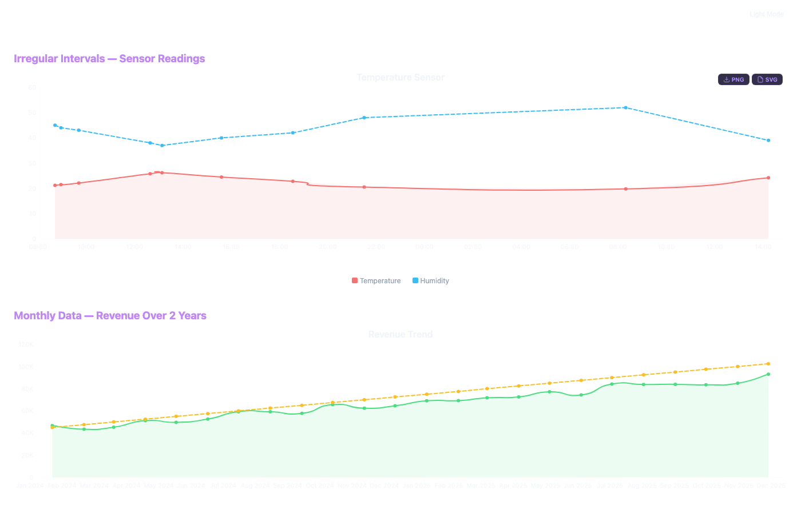
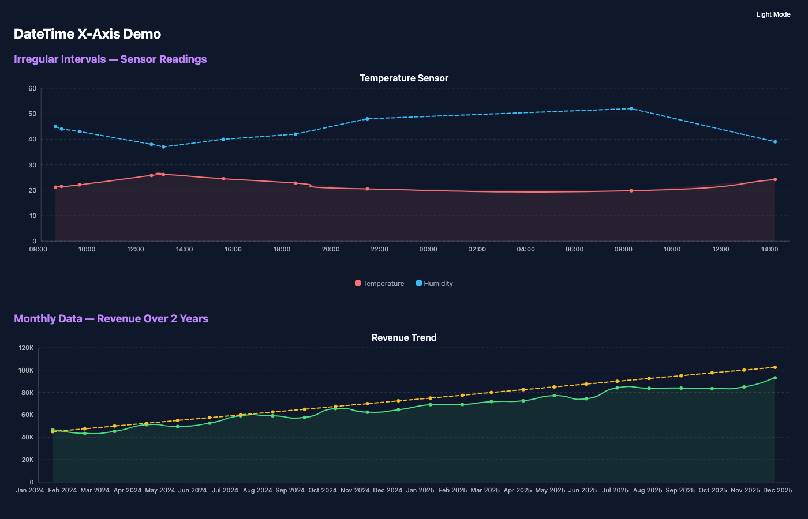
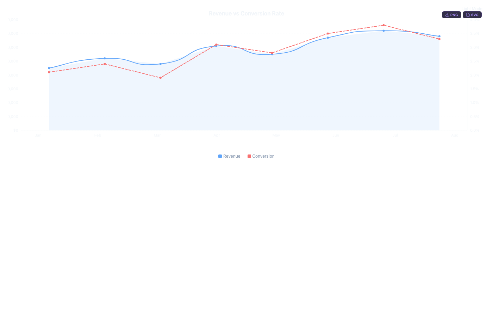
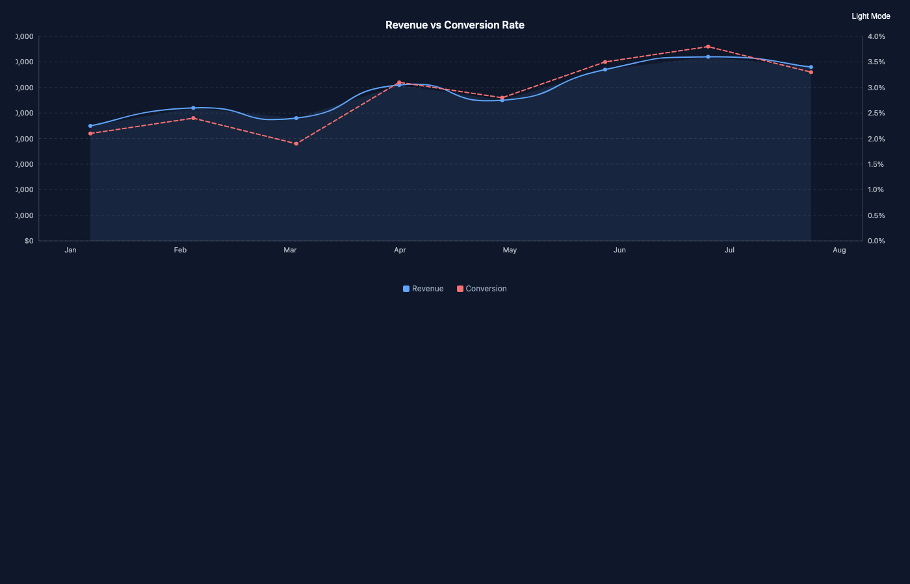
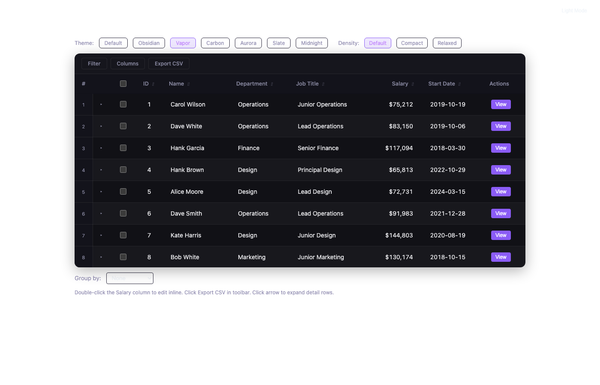
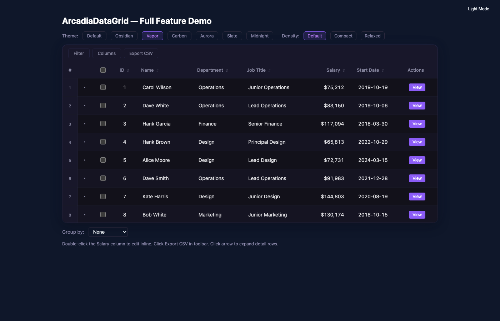

Arcadia Controls — 2026-03-25 — 3 visual issues identified and fixed
The /test/time-axis demo rendered with a white background because FullScreenLayout used background: transparent. Charts inherited the browser default white instead of the dark theme surface color.
Fix: Changed FullScreenLayout background to var(--arcadia-color-surface, #0f172a)


Same root cause as Time Axis — FullScreenLayout transparent background. Secondary Y-axis labels on the right were barely visible against white.
Fix: Same FullScreenLayout fix applies to all test pages.


Vapor theme used rgba(255,255,255,0.02) surfaces that were nearly identical to solid dark backgrounds. The "frosted glass" effect was invisible without a colorful background behind the grid.
Fix: Replaced translucent surfaces with a distinct dark palette featuring indigo-tinted borders, gradient background, and subtle glow shadow. Vapor now has its own visual identity without depending on what's behind it.


ChartBase.DisposeAsync threw InvalidOperationException during static prerendering when calling JS interop. Added catch for InvalidOperationException alongside existing JSDisconnectedException and ObjectDisposedException handlers.